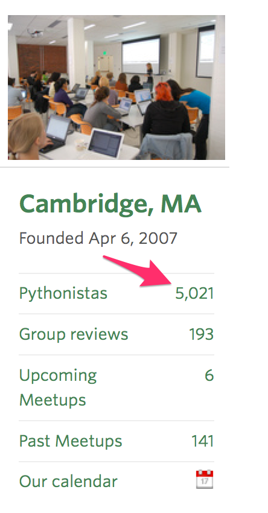
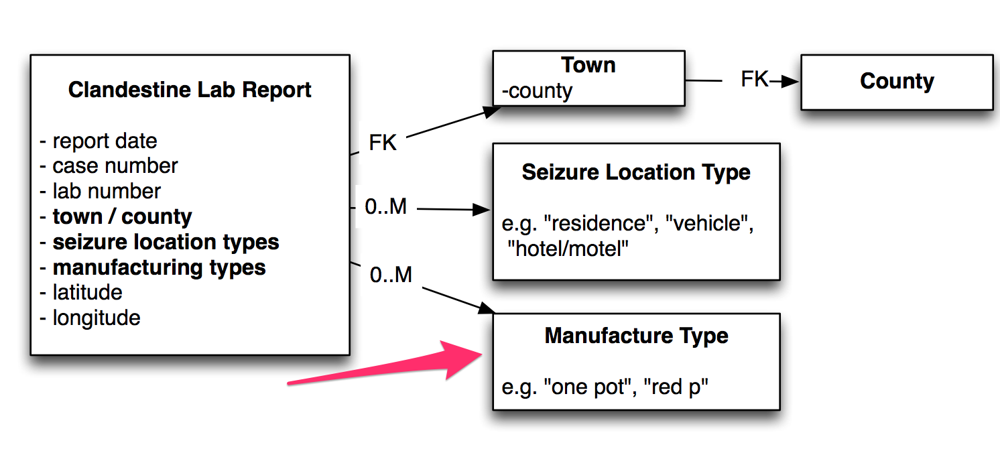
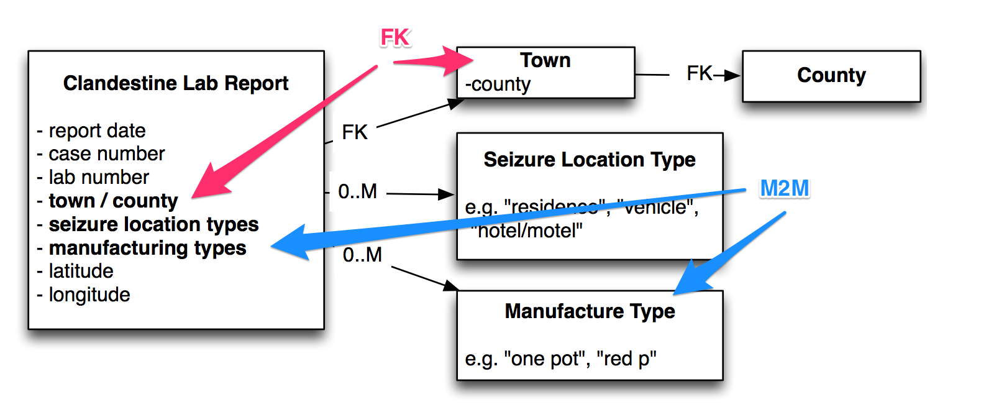
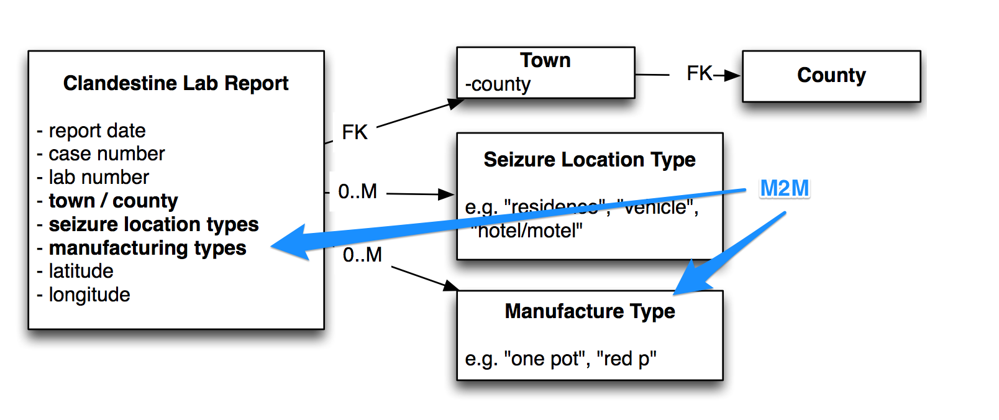
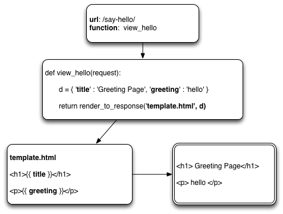

class: center, middle # Developing with Django: ### Get Your Admin for Nothing<br />and your SQL for Free <img src="imgs/01/django-logo-negative.png" alt="django" height="70"/> <img src="imgs/01/python.jpg" alt="python" height="70" style="border:1px solid #ccc;" /> <small>October 2014</small> --- ## today * ### background * ### django example - ### in: _tabular data_ - ### out: _database / website_ --- ## early python: programmers liked it <br /> <center> <table> <tr> <td></td> <td></td> </tr> </table> </center> source: [http://xkcd.com/353](http://xkcd.com/353) --- ## web frameworks <table> <tr> <td><b>Before 2004/05</b></td> <td><b>2005+</b></td> </tr> <tr> <td><img src="imgs/02-background/shovel.png" alt="shovel" width="350" /></td> <td></td> </tr> </table> --- ## python web frameworks <br /> <center> <img src="imgs/01/django-logo-negative.png" alt="django" width="170" /> <img src="imgs/01/flask-logo.png" alt="flask" width="170" /> <br /> <br /><br /> <img src="imgs/01/tornado.png" alt="tornado" width="130" /> <!--img src="imgs/01/twisted.jpg" alt="twisted" width="75" / --> <img src="imgs/01/webpy.gif" alt="webpy" width="100" /> <br /> </center> --- ## why pay attention? ---- _(heavy python users)_ <div> <img src="imgs/06-python-use/facebook.jpg" alt="facebook.jpg" width="150" /> </div> ---- _(notable django users)_ <center> <img src="imgs/06-python-use/instagram.png" alt="instagram.png" width="175" /> <img src="imgs/06-python-use/pinterest.jpg" alt="pinterest.jpg" width="150" /> <img src="imgs/06-python-use/edx_logo.png" alt="edx_logo.png" width="120" /> </center> --- ## strong local interest: python <center> <table> <tr> <td style="vertical-align:top;"><img src="imgs/07-local-interest/meetup-logo.png" alt="meetup" width="75" style="vertical-align:top;" /></td> <td style="vertical-align:top;"></td> <td style="vertical-align:top;"><img src="imgs/07-local-interest/pymeetup2.png" alt="pymeetup2" width="450" /></td> </tr> </table> </center> --- ## strong local interest: django <center> <table> <tr> <td style="vertical-align:top;"><img src="imgs/07-local-interest/meetup-logo.png" alt="meetup" width="75" style="vertical-align:top;" /></td> <td style="vertical-align:top;"></td> <td style="vertical-align:top;"></td> </tr> </table> --- ## quick note ### - writing correct code is hard<sup>1</sup> ### - reading and reasoning about code is hard<sup>1</sup> ### - it's easier to look at less code<sup>2</sup> <small><sup>1</sup> <a href="http://www.youtube.com/watch?v=yvjmAYmYOj0">Alex Gaynor SF Python Meetup, July 2014</a></small> <br /><small><sup>2</sup> 1 FTE depending on public transport <table> <tr> <td> <br /></small> </td> <td style="padding-left:40px;"> <br /><img src="imgs/08-quick-note/77-bus.png" width="200" alt="bus" /></small> </td> </tr> </table> --- ## python glimpse: list (1 of 2) ```python >>> l = ['cat', 'dog', 7, 'bird', 108] # define >>> for x in l: print (x) # iterate ... cat dog 7 bird 108 >>> l.sort() # sort >>> l [7, 108, 'bird', 'cat', 'dog'] >>> len(x) # size 5 ``` --- ## python glimpse: list (2 of 2) ```python >>> l[0:2], l[-3:] # slice 1st 2 items and last 3 items [7, 108], ['bird', 'cat', 'dog'] >>> filter(lambda x: type(x) is str, l) # remove non-strings ['bird', 'cat', 'dog'] >>> some_strings = [ ' got', 'whitepace ', ' ? '] >>> [ x.strip() for x in some_strings ] # transform each item ['got', 'whitepace', '?'] >>> import string >>> '-'.join(string.ascii_uppercase) # join 'A-B-C-D-E-F-G-H-I-J-K-L-M-N-O-P-Q-R-S-T-U-V-W-X-Y-Z' ``` --- ## python glimpse: dictionary (1 of 2) ```python >>> d = {} # create a dict { key : value} >>> d['greeting'] = 'hello' # add an item >>> d['closed_tickets'] = 848 # add an item >>> d['pets'] = ['dog', 'cat', 'bird'] # and another >>> d # unordered {'closed_tickets': 848, 'greeting': 'hello', 'pets': ['dog', 'cat', 'bird']} >>> d.get('greeting') 'hello' >>> d.keys() # show keys (unordered) ['greeting', 'pets', 'closed_tickets'] ``` --- ## python glimpse: dictionary (2 of 2) ```python >>> d.has_key('donut') False >>> d.get('bad key', '--no match--') # default if key not found '--no match--' >>> for key, val in d.items(): # iterate through ... print '%s -> %s' % (key, val) ... closed_tickets -> 848 greeting -> hello pets -> ['dog', 'cat', 'bird'] >>> d.get('bad key', '--no match--') # default if key not found '--no match--' ``` --- ## django: spreadsheet to database <center> <table> <tr> <td style="vertical-align:top;"></td> <td><a href="/Users/rmp553/Documents/iqss-git/indiana-meth-labs/scripts/meth_data/ISP_Meth_Lab_Locations_Table.xls"></a></td> </tr> </table> </center> <!-- <br />source: <a href="http://www.janbanning.com/gallery/bureaucratics/">Bureaucratics by Jan Banning</a> --> --- ## potentially 5 tables --- ## no problem 1. database 2. web admin interface (add/edit/delete) 3. serialization: JSON, XML 4. ORM access: command line or in files --- ## django: file layout ```unix methlabs\ settings\ base.py * local.py # apps, db type (postgres, sqlite, mysql, etc) apps\ counties\ __init__.py admin.py models.py # define tables clanlabs\ __init__.py admin.py * models.py # define tables share\ __init__.py admin.py models.py # define tables ``` --- ## in the settings file #### database ```python DATABASES = { 'default': { 'ENGINE': 'django.db.backends.sqlite3', # mysql, postgres, etc 'NAME': normpath(join(TEST_SETUP_DIR, 'methlabs.db3')), 'USER': '', 'PASSWORD': '', 'HOST': '', 'PORT': '', }, } ``` #### apps ```python LOCAL_APPS = ( 'apps.counties', 'apps.clanlabs', 'apps.share', ) ``` --- ## each table: define model ```python # from file apps/clanlabs/models.py from django.db import models class ManufacturingMethod(models.Model): name = models.CharField(max_length=100, unique=True) description = models.TextField(blank=True) sort_order = models.IntegerField(default=10) slug = models.SlugField(blank=True, help_text='auto-filled on save') def __unicode__(self): return self.name class Meta: ordering = ('sort_order', 'name', ) ``` <a href="imgs/10-models/manufacture.png"></a> --- ## django models: preview sql ```unix > python manage.py sqlall clanlabs ``` ```sql CREATE TABLE "clanlabs_manufacturingmethod" ( * "id" integer NOT NULL PRIMARY KEY, * "name" varchar(100) NOT NULL UNIQUE, "description" text NOT NULL, "sort_order" integer NOT NULL, "slug" varchar(50) NOT NULL ) ; CREATE INDEX "clanlabs_manufacturingmethod_f52cfca0" ON "clanlabs_manufacturingmethod" ("slug"); ``` <a href="imgs/10-models/manufacture.png"></a> --- ## django models: run sql ```unix *> python manage.py syncdb ``` ```unix Creating tables ... Creating table clanlabs_seizurelocationtype *Creating table clanlabs_manufacturingmethod Creating table clanlabs_clandestinelabreport_seizure_location_types Creating table clanlabs_clandestinelabreport_manufacturing_methods Creating table clanlabs_clandestinelabreport Installing custom SQL ... Installing indexes ... Installed 11 object(s) from 1 fixture(s) ``` <a href="imgs/10-models/manufacture.png"></a> --- ## handling FK and M2M ```python # from file apps/clanlabs/models.py class ClandestineLabReport(models.Model): case_number = models.CharField(max_length=255, db_index=True) report_date = models.DateField(validators=[validate_report_date]) * town = models.ForeignKey(Town) * manufacturing_methods = models.ManyToManyField(ManufacturingMethod\ * , blank=True, null=True) # (.. other fields hidden ..) ```  --- ## django models: preview sql FK ```unix > python manage.py sqlall clanlabs ``` ```sql CREATE TABLE "clanlabs_clandestinelabreport" ( "id" integer NOT NULL PRIMARY KEY, "case_number" varchar(255) NOT NULL, "report_date" date NOT NULL, * "town_id" integer NOT NULL REFERENCES "counties_town" ("id"), /* (.. other fields not shown ..) */ ); ``` ```sql CREATE INDEX "clanlabs_clandestinelabreport_850831a2" ON "clanlabs_clandestinelabreport" ("town_id"); ``` <a href="imgs/10-models/fk-relation.png"></a> --- ## django models: preview sql M2M ```unix > python manage.py sqlall clanlabs ``` ```sql CREATE TABLE "clanlabs_clandestinelabreport_manufacturing_methods" ( "id" integer NOT NULL PRIMARY KEY, * "clandestinelabreport_id" integer NOT NULL, * "manufacturingmethod_id" integer NOT NULL REFERENCES "clanlabs_manufacturingmethod" ("id"), * UNIQUE ("clandestinelabreport_id", "manufacturingmethod_id") ) ``` ```sql CREATE INDEX "clanlabs_clandestinelabreport_manufacturing_methods_4d8f49ca" ON "clanlabs_clandestinelabreport_manufacturing_methods" ("clandestinelabreport_id"); CREATE INDEX "clanlabs_clandestinelabreport_manufacturing_methods_21911cdd" ON "clanlabs_clandestinelabreport_manufacturing_methods" ("manufacturingmethod_id"); ``` <a href="imgs/10-models/m2m_relation_only.png"></a> --- ## django models: M2M table ### created on sync/migrate ``` >python manage.py syncdb ``` ```unix Creating tables ... Creating table clanlabs_seizurelocationtype Creating table clanlabs_manufacturingmethod Creating table clanlabs_clandestinelabreport_seizure_location_types *Creating table clanlabs_clandestinelabreport_manufacturing_methods Creating table clanlabs_clandestinelabreport Installing custom SQL ... Installing indexes ... Installed 11 object(s) from 1 fixture(s) ``` --- ## checklist 1. <s>database</s> 2. web admin interface (add/edit/delete) 3. serialization: JSON, XML 4. ORM access: command line or in files ---- ### development cost - 2 files with models - [clanlabs models.py - 67 sloc](https://github.com/raprasad/indiana-meth-labs/blob/master/methlabs/apps/clanlabs/models.py) - [counties models.py - 33 sloc](https://github.com/raprasad/indiana-meth-labs/blob/master/methlabs/apps/counties/models.py) - Total code: 100 lines --- ## web admin interface (add/edit/delete) ```unix apps\ counties\ __init__.py admin.py # define admin models.py # define tables clanlabs\ __init__.py * admin.py # define admin models.py # define tables share\ __init__.py admin.py # define admin models.py # define tables ``` --- ## web admin interface (add/edit/delete) ### one line of code ```python # apps/clanlabs/admin.py from django.contrib import admin *from apps.clanlabs.models import SeizureLocationType *admin.site.register(SeizureLocationType, SeizureLocationTypeAdmin) ``` <a href="http://127.0.0.1:8000/indiana-methlabs-admin/clanlabs/seizurelocationtypeproxy/" target="_blank">simple admin page</a> --- ## web admin interface (add/edit/delete) ### few more lines of code ```python # apps/clanlabs/admin.py from django.contrib import admin *from apps.clanlabs.models import SeizureLocationType class SeizureLocationTypeAdmin(admin.ModelAdmin): save_on_top = True list_display = ('name', 'sort_order', 'slug' ) search_fields = ('name',) list_editable = ('sort_order',) readonly_fields = ('modified', 'created' ) *admin.site.register(SeizureLocationType, SeizureLocationTypeAdmin) ``` <a href="http://127.0.0.1:8000/indiana-methlabs-admin/clanlabs/seizurelocationtype/" target="_blank">admin page 2</a> <a href="http://127.0.0.1:8000/indiana-methlabs-admin/clanlabs/clandestinelabreport/">admin page - more formatting</a> --- ## checklist 1. <s>database</s> 2. <s>web admin interface (add/edit/delete)</s> 3. serialization: JSON, XML 4. ORM access: command line or in files ---- ### development cost - 2 files with models - 100 sloc (simple ) - 2 files with admins (minutes for minimum) - [clanlabs models.py 51 -- but could do 5 sloc](https://github.com/raprasad/indiana-meth-labs/blob/master/methlabs/apps/clanlabs/admin.py) - [counties models.py - 15 sloc](https://github.com/raprasad/indiana-meth-labs/blob/master/methlabs/apps/counties/admin.py) - Total code: 166 lines --- ## serialization #### use your models ```unix python manage.py shell ``` ```python from apps.clanlabs.models import ClandestineLabReport from django.core import serializers queryset = ClandestineLabReport.objects.filter(report_date__year=2014)[0:5] data = serializers.serialize("json", queryset, indent=4) print(data) data = serializers.serialize("xml", queryset, indent=4) print(data) ``` --- ## serialization: dumpdata, loaddata #### from unix command line ```python # to JSON python manage.py dumpdata --indent=4 clanlabs.manufacturingmethod # to XML python manage.py dumpdata --indent=4 --format=xml clanlabs.manufacturingmethod # pipe to file python manage.py dumpdata --indent=4 clanlabs.seizurelocationtype > apps/clanlabs/fixtures/locations.json # load from file python manage.py dumpdata --indent=4 clanlabs.seizurelocationtype > apps/clanlabs/fixtures/locations.json ``` --- ## checklist 1. <s>database</s> 2. <s>web admin interface (add/edit/delete)</s> 3. <s>serialization: JSON, XML</s> 4. ORM access: command line or in files ---- ### development cost - 2 files with models - 2 files with admins (minutes for minimum) - Free! - Total code: 166 lines --- ## ORM access ```unix python manage.py shell ``` ```python from apps.clanlabs.models import SeizureLocationType, ManufacturingMethod, ClandestineLabReport l = SeizureLocationType.objects.all() for s in l: print s.id, s.name l.count() for x in range(1,100): s = SeizureLocationType(name=u'loc: %d' % x) s.save() # check admin bad_locations = SeizureLocationType.objects.filter(name__startswith=u'loc') bad_locations.delete() ``` [admin](http://127.0.0.1:8000/indiana-methlabs-admin/clanlabs/seizurelocationtype/) --- ## checklist 1. <s>database</s> 2. <s>web admin interface (add/edit/delete)</s> 3. <s>serialization: JSON, XML</s> 4. <s>ORM access: command line or in files</s> ---- ### development cost - 2 files with models - 2 files with admins (minutes for minimum) - Free! - Free! - Total code: 166 lines --- ## show it in the browser  --- ## show it in the browser: URL ```python urlpatterns = patterns('apps.clanlabs.views', url(r'^list/august-2014/$', 'view_august_2014', name="view_august_2014"), # --actual url-- --function -- --url name (arbitrary)-- ) ``` [url name in template](https://github.com/raprasad/indiana-meth-labs/blob/master/methlabs/templates/base.html#L56) [apps/clanlabs/urls.py](https://github.com/raprasad/indiana-meth-labs/blob/master/methlabs/apps/clanlabs/urls.py) --- ## show it in the browser: View ```python # apps/clanlabs/views.py def view_august_2014(request): d = {} # dict { key : value} d['title'] = 'August 2014 Report Listing' # pull reports from the database d['reports'] = ClandestineLabReport.objects.filter(is_visible=True\ , report_date__year=2014\ , report_date__month=8) return render_to_response('labs/view_august_2014.html'\ , d\ , context_instance=RequestContext(request)) ``` <br /> <br /> [apps/clanlabs/views.py](https://github.com/raprasad/indiana-meth-labs/blob/master/methlabs/apps/clanlabs/views.py) --- ## show it in the browser: Template ```html <h1>{{ title }}</h1> <b>{{ reports.count }}</b> report{{ reports.count|pluralize }} Listed. <table> {% for r in reports %} <tr> <td>{{ forloop.counter }}</td> <td>{{ r.report_date }}</td> <td>{{ r.case_number }}</td> <td>{{ r.lab_number }}</td> <td>{{ r.address }}</td> <td>{{ r.county }}</td> </tr> {% empty %} <tr> <td>No reports for this month</td> </tr> {% endfor %} </table>``` [templates/labs/view_august_2014.html](https://github.com/raprasad/indiana-meth-labs/blob/master/methlabs/templates/labs/view_august_2014.html) | <a href="http://127.0.0.1:8000/labs/list/august-2014/" target="_blank">see page</a> --- ## show it in the browser: More Views #### The ORM loves me #### <a href="http://127.0.0.1:8000/labs/list-inefficient/2014/8/" target="_blank">The ORM loves me not</a> --- ## show it in the browser: Month Menu #### query ```python d['month_menu'] = ClandestineLabReport.objects.filter(is_visible=True\ , report_date__year=year\ ).dates('report_date', 'month') ``` #### template snippet ```html <ul class="pagination pagination" style="padding:0;margin:0"> {% for mm in month_menu %} <li{% if mm == selected_month %} class="active"{% endif %}> * <a href="{% url 'view_list_by_month_with_menu' mm.year mm.month %}"> {{ mm|date:"M"}} </a> </li> {% empty %} <li>No data available</li> {% endfor %} </ul> ``` #### <a href="http://127.0.0.1:8000/labs/list-with-menu/2014/8/" target="_blank">page</a> --- ## Share: Make a Form #### [model](https://github.com/raprasad/indiana-meth-labs/blob/master/methlabs/apps/share/models.py#L6) ```python class SharedReportRecord(TimeStampedModel): report_month = models.DateField() to_email = models.EmailField() from_name = models.CharField(max_length=100) from_email = models.EmailField() full_message = models.TextField(blank=True) md5 = models.CharField(max_length=40, blank=True, db_index=True, help_text='auto-filled on save') ``` #### [form](https://github.com/raprasad/indiana-meth-labs/blob/master/methlabs/apps/share/forms.py#L1) ```python class SharedReportRecordForm(forms.ModelForm): class Meta: model = SharedReportRecord widgets = {'report_month': forms.HiddenInput() } exclude = ['full_message', 'md5', 'created', 'modified'] ``` --- ## Share: Display the Form ```python def view_share_report(request, year, month): d = {} if request.POST: * f = SharedReportRecordForm(request.POST) * if f.is_valid(): shared_report_record = f.save() email_report(request, shared_report_record) success_url = reverse('view_share_report_success'\ , kwargs=dict(shared_info_md5=shared_report_record.md5)\ ) return HttpResponseRedirect(success_url) else: print (f.errors) d['ERROR_FOUND'] = True else: * f = SharedReportRecordForm(initial={ 'report_month' : selected_month }) * d['share_form'] = f return render_to_response('share/share.html', d) ``` [views](https://github.com/raprasad/indiana-meth-labs/blob/master/methlabs/apps/share/views.py#L50) | <a href="http://127.0.0.1:8000/share/send-email/2014/8/" target="_blank">share report</a> --- ## API: Tastypie Example ```html /api/v1/seizure-location-type/...``` ```python #apps/clanlabs/api.py *class SeizureLocationTypeResource(ModelResource): class Meta: queryset = SeizureLocationType.objects.all() resource_name = 'seizure-location-type' excludes = [ 'created', 'modified'] ``` ```python #urls.py from tastypie.api import Api *from apps.clanlabs.api import SeizureLocationTypeResource, ClanLabReportResource v1_api = Api(api_name='v1') v1_api.register(SeizureLocationTypeResource()) v1_api.register(ClanLabReportResource()) urlpatterns += patterns('', (r'^api/', include(v1_api.urls)), )``` <a href="http://127.0.0.1:8000/" target="_blank">api example</a> --- ## covered today ### models - defining tables | serialization | ORM | API ### admin - defining | web interface ### urls / views / templates - ORM gotcha: ForeignKey, ManyToMany - simple form ### <span style="color:#006699;"><i>you can get a lot from models</i></span> --- ## out of time ### reference - [excellent documentation](https://docs.djangoproject.com) | [many books](http://www.amazon.com/s/ref=sr_kk_1?rh=i%3Astripbooks%2Ck%3Adjango+python&keywords=django+python) ### much, much more built-in - [db migrations](https://docs.djangoproject.com/en/1.7/topics/migrations/) | [testing](https://docs.djangoproject.com/en/1.6/topics/testing/overview/) | [internationalization](https://docs.djangoproject.com/en/1.7/topics/i18n/) - [caching](https://docs.djangoproject.com/en/1.6/topics/cache/) | [geo django](https://docs.djangoproject.com/en/1.6/ref/contrib/gis/) - etc, etc ### popular packages for django - [haystack: solr, elastic search, whoosh, xapian](http://haystacksearch.org/) - [nosql, mongo ORM](https://django-mongodb-engine.readthedocs.org/en/latest/index.html) - [celery task queue: redis, RabbitMQ, etc](http://www.celeryproject.org/) --- class: center, middle ## thank you --- ## django models: define slug note 1 ```python >>> from django.utils.text import slugify >>> slugify("1737 Cambridge St") '1737-cambridge-st' >>> slugify(u"I Want A Nice Polite URL!#$@") 'i-want-a-nice-polite-url' ``` --- ## django models: define slug note 2 ```python *from django.utils.text import slugify from django.db import models class ManufacturingMethod(models.Model): name = models.CharField(max_length=100, unique=True) description = models.TextField(blank=True) sort_order = models.IntegerField(default=10) * slug = models.SlugField(blank=True, help_text='auto-filled on save') def __unicode__(self): return self.name def save(self, *args, **kwargs): * self.slug = slugify(self.name) super(ManufacturingMethod, self).save(*args, **kwargs) class Meta: ordering = ('sort_order', 'name', ) ``` ??? slugify. lowercase string * in: 'This location' * out: 'this-location'